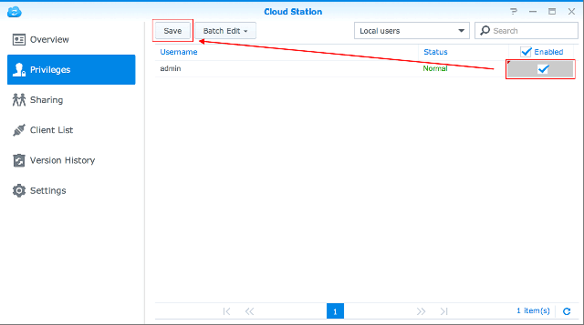

Visão geral
O Cloud Station para Synology NAS é um aplicativo de sincronização de arquivos que permite que você sincronize facilmente os arquivos em seu Synology NAS com outros dispositivos, tais como computadores ou dispositivos móveis (com o DS cloud). Quando o Cloud Station tiver sido instalado no Synology NAS e no computador, os arquivos armazenados em uma pasta específica do seu computador serão sincronizados automaticamente com o Synology NAS.
1. Instalação do Cloud Station
- Vá para Centro de pacotes, encontre o Cloud Station e em seguida clique em Instalar.

2. Habilitar Cloud Station
- Inicie o Cloud Station.
- Se você não tiver habilitado o recurso de base do usuário, você será solicitado a fazê-lo. Clique em OK.
- Você será redirecionado para a página de configurações de usuário. Habilite as bases de usuário e clique em Aplicar.
- Volte para o Cloud Station e você será solicitado a habilitá-lo. Clique em Sim.
- Vá para Privilégios e especifique quais usuários serão capazes de usar o Cloud Station. Clique em Salvar. 


3. Instale e habilite o cliente
- Vá para Cloud Station > Visão Geral e clique no botão Computadores.
- Clique no botão para baixar o Cloud Station para seu sistema operacional. (Você também pode baixar o Cloud Station no Centro de Download da Synology.)
- Abra o instalador de seu computador e siga as instruções na tela.
- Após a instalação, execute o Cloud Station em seu computador. Clique em Iniciar Agora.
- Digite o endereço do Synology NAS executando o Cloud Station (ou QuickConnect ID), nome de usuário e senha. Você pode clicar no ícone de pesquisa à direita para pesquisar os IPs dentro de sua LAN. Clique em Avançar.
- Selecione como você deseja configurar sua tarefa (aqui selecionaremos Configurações rápidas), depois clique em Avançar.
- Clique em Concluir para completar a configuração da pasta do seu Cloud Station.
- Clique em Abrir agora para abrir a pasta do seu Cloud Station.
- Você pode encontrar o ícone do Cloud Station na bandeja do seus sistema.
- Clique duas vezes no ícone do Cloud Station para abrir o menu da bandeja. Aqui você pode visualizar o andamento e o stats de seus arquivos. Clique em Aplicativo principal para abrir o Cloud Station.
- Na abertura, o sistema mostrará algumas dicas sobre como usar o Cloud Station. Clique na seta para a direita para ver mais dicas ou clique em Ir para tutoriais on-line para obter mais informações. Se não precisar de dicas, clique em Não mostrar isso novamente.
- Agora você pode gerenciar suas tarefas de sincronização no Cloud Station.


4. Sincronização de dados com seus dispositivos móveis
O DS cloud está disponível grátis na Apple App Store e Google Play Store. Também é possível escanear o código QR abaixo para baixar diretamente.